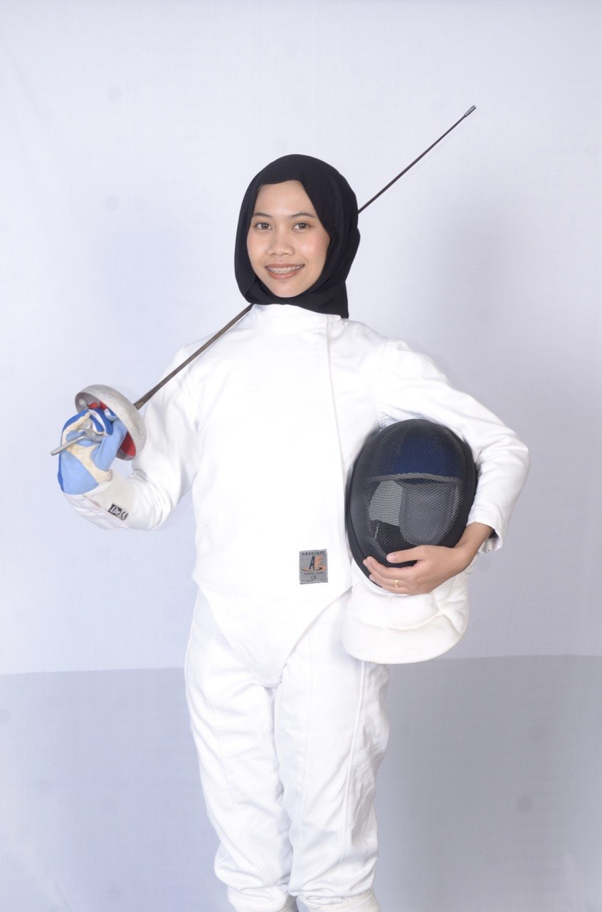

SPORTS LEADERSHIP
UTP Fencing Championship 2025
Combining event leadership with competitive participation as Head of Event Management and an Épée competitor.

THE CHAMPIONSHIP
About the event
The UTP Fencing Championship 2025 was organised by the UTP Fencing Club as a fencing competition for eligible student participants from across Malaysia.
The championship brought together competitive student fencers while providing a structured environment for participants to compete across fencing categories and events.
My involvement combined two different responsibilities: organising the championship and participating as a competitive fencer.
LEADERSHIP ROLE
Head of Event Management
I served as Head of Event Management for the championship.
My role involved contributing to the planning and coordination required to support the smooth execution of the event, including programme flow and operational preparation.
Managing responsibilities within a competitive sporting environment required effective communication, teamwork, adaptability and attention to timing.
COMPETITIVE PARTICIPATION
Épée Competitor
Alongside my event-management responsibilities, I also participated as an Épée fencer.
I competed in both individual and team events , allowing me to experience the championship from both an organiser's and competitor's perspective.
Competitive fencing has strengthened my discipline, strategic thinking, focus and ability to make decisions quickly under pressure.
EXPERIENCE GAINED
Skills strengthened
Leadership
Taking responsibility for an important event-management function within the championship.
Event Management
Supporting programme coordination, competition flow and operational preparation.
Teamwork
Collaborating with organising committee members and competing as part of an Épée team.
Performance Under Pressure
Balancing organising responsibilities while also preparing for and participating in competitive fencing.
Time Management
Managing responsibilities across both event execution and competitive participation.
Discipline
Competitive Épée requires concentration, preparation, tactical thinking and consistent discipline.
PERSONAL DEVELOPMENT
Beyond competition
This experience was particularly meaningful because I was not limited to a single role.
I had to contribute to the successful organisation of a competition while also preparing myself to compete.
It strengthened my ability to manage competing priorities, communicate with different teams, remain composed under pressure and take responsibility in both leadership and competitive settings.
Leadership On and Off the Piste
UTP Fencing Championship 2025 allowed me to combine competitive sport with practical leadership and event-management experience.